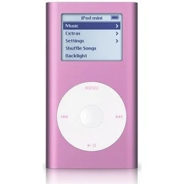

<!DOCTYPE html>
<html lang="en">
  <head>
    <meta charset="UTF-8" />
    <meta name="viewport" content="width=device-width, initial-scale=1.0" />
    <title>MARCUS FRAME: FOUND</title>
    <link
      href="https://fonts.googleapis.com/css2?family=DotGothic16&display=swap"
      rel="stylesheet"
    />
    <link rel="stylesheet" href="styles.css" />
  </head>
</html>
<body class="paragraph-articles">
  <h1 class="title-article">WANTED: Who is Marcus Frame ?</h1>
  <div class="intro-columns">

<p>Okay, I might actually be a stalker now? Or a concerning fan girl? Some might romantically call it manifestation. However creepy or weird, I am very happy. I found Marcus Frame.</p>

<p>So, to refresh your memory, Marcus Frame made an appearance into my life and here began a slight obsession for his sound. Told my friends : yeah, he's a Scottish Loyle Carner. Massive deal for pink ipod mind you. I wrote an article about him, the whole ordeal, wondering who this artist was and what he would do next. He was doing drum n bass, funk and rap and I was into all of it. One night discussing his music, I told my friend I wanted to interview him. And it happened, I found Marcus Frame.</p>

<p>In my clumsy ways, I, of course:</p>

<ul>
<li>Gave a non-UK time to a Scottish artist</li>
<li>Sent him an email to say I had been waiting on the link</li>
<li>Sent him another email to apologize because I had gotten the time wrong</li>
</ul>

<p>Off to a great start!!</p>

<p>My first impression was that Marcus Frame is more quiet than I thought. The assumption was certainly misplaced, considering his laid-back / observer’s writing, I could have expected it. Maybe I was surprised he was sitting so straight. His voice was instantly recognizable.</p>

<p>A couple things I learnt from this interview: Marcus Frame is aware of his Marcus Frame Spanish doppëlganger (no plans of destitution — yet). I say “like” way too much. He is going to make music under a different secret alias. He used to have a band but his mate got deported from England back to the US after uni (how contemporary). He’s currently making an album, which might include some French. He’s definitely a great artist, and maybe scared of getting old or missing out, so he’s giving us all of it.</p>

<p class="quote">“The music's just like a little extension of myself. It's nothing too serious.”</p>

</div>
<div class="section-divider">
  <span>INTERVIEW</span>
</div>
<div class="interview">

<p class="pi"><em>Pink Ipod:</em> What was the first song you’ve ever written? A silly one perhaps?</p>

<p class="mf">Marcus Frame: There’s probably many silly songs I’ve written, from a young age. I have played guitar for quite a while, since I was a toddler. I think my first song was an apology for not tidying my room. Based on “Price Tag” by Jessie J.</p>

<p class="commentary">Unfortunately, I can only give a written description of the masterpiece:</p>

<p class="lyrics">
Mommy Mommy Mommy<br>
Can you just forgive me give me give me<br>
I’m only huuuuman<br>
And humans make mistaaaakes
</p>

<p class="commentary"> It worked, his mom forgave him.</p>


<p class="pi"><em>PI:</em> Obviously this song was the sign you were going to become a great artist. How did you start making music “more seriously”?</p>

<p class="mf">MF: I got out of the house, and started making music when I possibly could. I moved out into a west area of town, and tried to socialize and network with a lot of musicians and creatives. Mostly, I’m trying to figure everything out as we speak. I can’t say that I have reached a state I’m completely happy with.</p>


<p class="pi"><em>PI:</em> As you just said, you're figuring things out right now. There's a lot of different genres that you've been exploring: rap, spoken word, and more funky music. And then you have a drum and bass song, “Zip”. Is there a genre you prefer so far?</p>

<p class="mf">MF: It's funny you say that, because the first track I've ever made and produced was a tech house track. I was into DJing at the time and followed the likes of Michael Beebe and Pawsa. I made a tech house track called “Potluck” under an alias. Ideally I'd like to move back into producing under a different alias again.</p>


<p class="pi"><em>PI:</em> What would you produce under that alias?</p>

<p class="mf">MF: I would use it so I could just be more myself and make random things like “Zip”. Random beats, different accents, sunglasses — just so not everybody relates all my artwork directly to me.</p>


<p class="commentary">Here, I got a bit skeptical, I’ll be honest. I get skeptical of all artists who tell me they don’t think about it that much. I understand it though. It just flows through them, it gets ejected.</p>


<p class="mf">MF: I'll only write when something's happened to me — heartbreak or just life. If I'm bored or going through something personally, I'll write something down and it falls into a track.</p>


<p class="pi"><em>PI:</em> So you write before you compose?</p>

<p class="mf">MF: Yeah, write before I compose mostly.</p>


<p class="pi"><em>PI:</em> Which came first, writing or musical practice?</p>

<p class="mf">MF: Music first. I've always played guitar and bass. Writing came later as I grew up and wanted to look at the world through words.</p>


<p class="pi"><em>PI:</em> You said you used to DJ. What kind of tracks were you mixing?</p>

<p class="mf">MF: Old school disco house. Kind of techno. Stuff that makes people want to groove and actually dance instead of just standing with a drink.</p>


<p class="pi"><em>PI:</em> In terms of musical influences?</p>

<p class="mf">MF: Tom Misch, Jordan Rakei, Stevie Wonder, Paul Weller. The Tom Misch kind of sound is something I like to imitate.</p>


<p class="pi"><em>PI:</em> Do you make music full-time?</p>

<p class="mf">MF: No.</p>


<p class="pi"><em>PI:</em> What do you do on the side?</p>

<p class="mf">MF: I'm currently in college. Studying, working, making music. I've got a new job in sales as well.</p>


<p class="pi"><em>PI:</em> Do you still find time for music?</p>

<p class="mf">MF: Yeah. I've made some of my best stuff after closing shifts — four in the morning, bar work. I'm working on a wee album just now.</p>


<p class="note">Hihihihihiiiii that was cool to hear!</p>


<p class="pi"><em>PI:</em> What’s the concept for the album?</p>

<p class="mf">MF: A few tracks similar to “More Bass”, a few spoken word pieces, then a bridge to the alias. After that there'll be an album based on the alias.</p>


<p class="pi"><em>PI:</em> Do you have non-musical inspirations?</p>

<p class="mf">MF: I like the James Bond series and Ian Fleming books. I like nature as well — going for walks, looking at trees.</p>

<p class="pi"><em>PI:</em> How close do you feel to Scotland as a territory?</p>

<p class="mf">MF: I'm from Scotland, born and raised. I love the nature. I'm proud to be Scottish and proud of where I'm from.</p>


<p class="commentary">I mention I'm from the French Alps and Marcus responds with a great French accent and questions about skiing.</p>


<p class="pi"><em>PI:</em> Any dream collaborations?</p>

<p class="mf">MF: Tom Misch, Loyle Carner, Kofi Stone, Ezra Collective, Knucks.</p>


<p class="pi"><em>PI:</em> Dream collaborations with dead artists?</p>

<p class="mf">MF: Elvis, D’Angelo, Amy Winehouse.</p>


<p class="pi"><em>PI:</em> If you had unlimited funds?</p>

<p class="mf">MF: I'd go to a log cabin in Switzerland, make a high-quality video and a well-produced track over six months with lots of different artists.</p>


<p class="pi"><em>PI:</em> What kind of music would you make there?</p>

<p class="mf">MF: Whatever came naturally. Funk, jazz — depends on who I'm with.</p>


<p class="pi"><em>PI:</em> Thank you very much. It was lovely to speak to you.</p>

<p class="mf">MF: Thanks, super. Have a lovely evening. À bientôt. Bye bye.</p>

<p class="how-to-browse"> find out more on pink-ipod.com </p>
</div>
</div>
  <p class= "how-to-browse"> go and listen here </p>
  <div class="links">
    <a href="https://www.youtube.com/channel/UCX6YnfwdxWLqvw8frz9tY3g" target="_blank">
      
    </a>
    <a
      href="https://open.spotify.com/artist/0Src4JN3vDK4CMEwywo410"
      target="_blank"
    >
      
    </a>
    <a
      href="https://music.apple.com/fr/artist/marcus-frame/1739881697?l=en-GB"
      target="_blank"
    >
      
    </a>
    <a
      href="https://www.instagram.com/marcusframemusic/"
      target="_blank"
    >
      
    </a>
  </div>
</body>
<a href="index.html">
  
</a>
</html>
